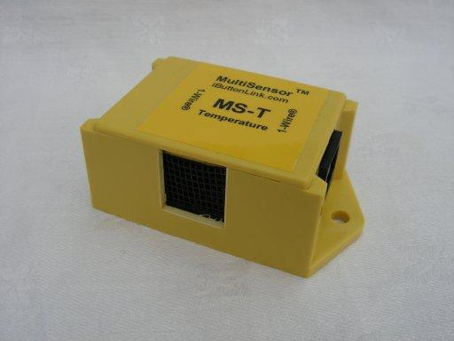
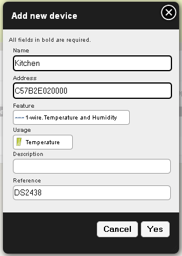

Plugin onewire¶
Go this plugin development information
Purpose¶
This plugin aims at communicating with 1-Wire devices.
To work, this plugin needs OWFS.
List of actually supported devices:
| Component | Datasheet | Target Domogik release |
|---|---|---|
| DS18B20 | http://pdfserv.maxim-ic.com/en/ds/DS18B20.pdf | 0.1.0 |
| DS18S20 | http://pdfserv.maxim-ic.com/en/ds/DS18S20.pdf | 0.1.0 |
| DS2401 | http://datasheets.maxim-ic.com/en/ds/DS2401.pdf | 0.1.0 |
| DS2438 | http://datasheets.maxim-ic.com/en/ds/DS2438.pdf | dev release |
In next releases, support for more devices will be included.
Known features¶
Owfs 2.8p2 and owfs 2.8p3 don’t work fine with python¶
Please, use Owfs 2.7p38 or 2.8p4 (recommended) or a higher version. Owfs 2.8p4 fail with python2.7, use higher version or source code repository
Prerequisite : install OWFS¶
Ubuntu/Debian installation¶
On Ubuntu or Debian, existing packages on http://www.owfs.org are old. So, we will get the last version of sources and compile them.
Tools needed to compile OWFS¶
First, we will need a C compiler to install OWFS. We will use gcc. To see if gcc is available:
$ gcc --version
If gcc is found, it’s good, else:
$ apt-get install gcc
We also need make and ed:
$ apt-get install make ed
Then, we will need Autoconf in ersion 2.57 or greater. To see if it is available:
$ autoconf --version
If not, install it:
$ apt-get install autoconf
$ autoconf --version
version 2.65
We will also need USB development librairies:
$ apt-get install libusb-dev
And then, install swig:
# apt-get install swig
Owfs¶
Download OWFS (adapt following lines to your version) and extract package:
$ cd /usr/src
$ wget http://downloads.sourceforge.net/project/owfs/owfs/2.8p4/owfs-2.8p4.tar.gz
$ tar xvzf owfs-2.8p4.tar.gz
$ cd owfs-2.8p4
Set configuration options with python binding and compile it:
$ ./configure --with-python
$ make
As root / with sudo:
$ make install
or Download OWFS from repository:
$ sudo apt-get install cvs
$ cd /usr/src
$ cvs -z3 -d:pserver:anonymous@owfs.cvs.sourceforge.net:/cvsroot/owfs co owfs
$ cd owfs
Set configuration options with python binding and compile it:
$ autoreconf -i
$ ./configure --with-python
$ make
As root / with sudo:
$ make install
OWFS is now installed for python
Installation¶
Plugins are installed from the user interface administration. See ((Installing_the_packages|this page)) for more details.
Make sure you installed OWFS before installing this plugin.
Wiring standards¶
Onewire interfaces¶
DS9490R¶

The device address to use for this interface will be u
Here is the description on this interface connection :

Permissions¶
You have to be root to use Onewire network. To Allow every user on your computer to use Onewire, follow this instructions :
First, we need Vendor ID and Product ID:
$ lsusb | grep DS1490
Bus 006 Device 013: ID 04fa:2490 Dallas Semiconductor DS1490F 2-in-1 Fob, 1-Wire adapter
Here, Vendor ID is 04fa and Product ID is 2490 (it’s the same for all DS1490).
Add a udev rule for the OneWire in the file /etc/udev/rules.d/onewire.rules:
SUBSYSTEMS=="usb", ATTRS{idVendor}=="04fa", ATTRS{idProduct}=="2490", SYMLINK+="onewire", MODE="0666"
If you haven’t a DS9490, you should adjust with your VendorID ans ProductID.
Now, you just have to unplug and plug again your Onewire stick.
Plugin configuration¶
Common parameters¶
| Key | Default value | Description |
|---|---|---|
| device | u | The 1wire device address. The available values are : u (usb interface), /dev/ttySO (example for a serial interface), remote_system:3003 (address of a OWSERVER) |
| cache | checked | Checked : use the cache. Unchecked : don’t use the cache. Reading data on 1 wire netowrk is a slow operation, so if you read a lot of data, it could be a good idea to use cache. More informations on http://owfs.sourceforge.net/caching.html |
others...¶
There are other configuration items which depend on components. You will find them in the components chapters of this page.
DS18B20¶


Configuration items¶
| Key | Default value | Description |
|---|---|---|
| ds18b20-en | unchecked | Enabling (or not) DS18B20 components support. |
| ds18b20-int | 60 | The interval between each DS18B20 component reading. If you want to monitor your house temperature, 60 or 120s is a good value. If you want to monitor something where temperature can change quickly, you can put a small value (5s for example) but you will have to set cache to False to get instant values. |
| ds18b20-res (1) | 12 | Resolution of temperature read on onewire network. Possible values : 9, 10, 11, 12. |
Note
(1) Note that the resolution has an impact on time for reading temperature on device. On Maxim site you will find this table which indicates time taken for each resolution.
| Resolution | 9 bits | 10 bits | 11 bits | 12 bits |
| Conversion Time (ms) | 93.75 | 187.5 | 375 | 750 |
| LSB (°C) | 0.5 | 0.25 | 0.125 | 0.0625 |
Monitoring my house temperatures¶
You should set ds18b20-int between 60 seconds and 300 seconds (5 minutes) depending on the precison you want to have. Less than 60 seconds is useless, more than 300 seconds could be not sufficient for managing temperature.
Creating a device for a DS18B20¶
In administration, go to Organization > Devices page. Create a new device like this :
| Field | Suggested value | Description |
|---|---|---|
| Name | A name | |
| Address | The DS18b20 id (you can get it with this helper command : onewire ds18b20 which will give you all your DS18B20 detected) | |
| Feature | 1Wire.Thermometer | |
| Usage | Temperature | |
| Description | a short description (Placement, usage, etc) | |
| Reference | the device reference (model, etc) |
Example :

Attribute the feature to a place and you can now see your temperature.
DS18S20¶
Difference with DS18B20¶
The DS18 B 20 component offers 4 resolutions for temperature : 9 ~ 12 bits. The DS18 S 20 offers only a 9bits resolution.


Configuration items¶
| Key | Default value | Description |
|---|---|---|
| ds18s20-en | unchecked | Enabling (or not) DS18S20 components support. |
| ds18s20-int | 60 | The interval between each DS18S20 component reading. If you want to monitor your house temperature, 60 or 120s is a good value. If you want to monitor something where temperature can change quickly, you can put a small value (5s for example) but you will have to set cache to False to get instant values. |
Configuration examples¶
See DS18S20 component for the examples.
Creating a device for a DS18S20¶
See DS18S20 component for the indications.
DS2401¶
Configuration items¶
| Key | Default value | Description |
|---|---|---|
| ds2401-en | unchecked | Enabling (or not) DS2401 components support. |
| ds2401-int | 5 | Interval between each DS2401 component reading. The interval to set depends on the usage you will have for DS2401 components. |
Opening sensor for a garage door¶
A garage door is something that takes time to close/open, especially when it has a motor. Opening or closing such a door can take up to 15 seconds, so there is no risk that someone opens and closes your door without being “seen” by the DS2401 component (with a 5 seconds value).
Creating a device for a DS2401¶
In administration, go to Organization > Devices page. Create a new device like this :
| Field | Suggested value | Description |
|---|---|---|
| Name | A name | |
| Address | The DS2401 idid (you can get it with this helper command : onewire ds2401 which will give you all your DS2401 detected) | |
| Feature | 1Wire.Serial Number | |
| Usage | The appropriate usage (shutter, window, door, ...) | |
| Description | a short description (Placement, usage, etc) | |
| Reference | the device reference (model, etc) |
Example :

Attribute the feature to a place and you can now see the status of your DS2401 (present or not)
DS2438 in MS-T module (not in 0.1.0 : in dev release)¶
How to plug¶

Configuration items¶
| Key | Default value | Description |
|---|---|---|
| ds2438-en | unchecked | Enabling (or not) DS2401 components support. |
| ds2438-int | 60 | Interval between each DS2438 component reading. Interval to set depends on the usage you will have for DS2438 comopnents. |
Creating a device for a DS2438Z - temperature¶
In administration, go to Organization > Devices page. Create a new device like this :
| Field | Suggested value | Description |
|---|---|---|
| Name | A name | |
| Address | The DS2428 id (you can get it with this helper command : onewire ds2438 which will give you all your DS18B20 detected) | |
| Feature | 1Wire.Thermometer and humidity | |
| Usage | Temperature | |
| Description | a short description (Placement, usage, etc) | |
| Reference | the device reference (model, etc) |
Example :
Attribute the feature to a place and you can now see your temperature.
Helpers¶
To get an introduction to helpers, you can read the Helper documentation. To use a helper, the plugin must be stopped.
Warning
For some reasons, it is not a good idea to use both onewire helper and onewire plugin : you could obtain permission issues... These issues could even force you to reboot your computer or wait a long time before using back the plugin or the helper. So, you should only use the helper when the plugin is stopped and shouldn’t start the plugin when using the helper. It is a sad thing and we will look how to correct these bug (which is linked to the ow library). If you have a solution about this, feel free to report it :)
Note
Notice about parameter: parameter has the same possible values as defined in “configuration > device”. For the following examples we will use the “u” device which is Usb adaptor.
onewire all¶
onewire all will list all onewire components found on your 1 wire network.
Example:
onewire all u
| Family | Component id | Type |
-----------------------------------
| 28 | C57B2E020000 | DS18B20 |
| 01 | 4507B2130000 | DS2401 |
| 81 | 93702C000000 | DS1420 |
onewire detail¶
onewire detail will display all attributes of component.
Example:
onewire detail u C57B2E020000
C57B2E020000 attributes :
- address : 28C57B2E0200005D
- crc8 : 5D
- die : C2
- family : 28
- fasttemp : 25
- id : C57B2E020000
- locator : FFFFFFFFFFFFFFFF
- power : 0
- present : 1
- r_address : 5D0000022E7BC528
- r_id : 0000022E7BC5
- r_locator : FFFFFFFFFFFFFFFF
- temperature : 25.1875
- temperature10 : 25.25
- temperature11 : 25.25
- temperature12 : 25.1875
- temperature9 : 25
- temphigh : 75
- templow : 70
- trim : 56247
- trimblanket : 0
- trimvalid : 0
- type : DS18B20
onewire ds18b20¶
onewire ds18b20 will display important data about all DS18B20 components found.
Example:
onewire ds18b20 u
DS18B20 : id=C57B2E020000
- Temperature : 25.125
- Powered (1) / parasit (0) : 0
onewire ds18s20¶
onewire ds18s20 will display important data about all DS18S20 components found.
Example:
onewire ds18s20 u
DS18S20 : id=F1F0DB010800
- Temperature : 28.75
- Powered (1) / parasit (0) : 0
onewire ds2401¶
onewire ds2401 will display important data about all DS2401 components found.
Example:
onewire ds2401 u
DS2401 : id=4507B2130000
- Present : 1
onewire ds2438¶
onewire ds2438 will display important data about all DS2438 components found.
Example:
onewire ds2438 u
DS2438 : id=F1F0DB010800
- Temperature : 28.75
- Humidity : 78